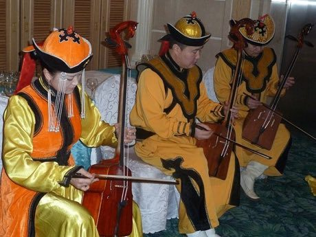

Home / Classical Worlds / Steppe and Arctic
Encyclopedia ID 34
Morin khuur
Морин хуур / morin khuur · horsehead fiddle


Bow the two strings in time with guiding notes to play steppe melodies and galloping horse rhythms, with the instrument's horse-head scroll and long-song phrasing.
Heritage note
Part of the living heritage of Mongolia. Some forms of this practice carry deep meaning for the communities who keep it; here we describe the play and the craft only, with respect for its roots. Animals are partners in this tradition; good care and local rules always come first.
Origins
Usually placed in the era of Classical Worlds (about 1000 BCE to 500 CE), although its exact origins are uncertain, within the cultural world of Steppe and Arctic.
Sources
Related entries

Khomus
Russia · Musical instruments
Kathputli string puppets
India · Performance and storytelling
Valiha tube zither
Madagascar · Musical instruments
Krar lyre
Ethiopia +1 · Musical instruments
Joropo llanero band
Venezuela +1 · Musical instruments
Kanklės
Lithuania · Musical instruments